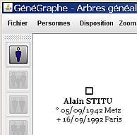

Pour ajouter une personne, cliquez sur le bouton  ou allez dans le menu Personnes et choisissez Ajouter. Une fenêtre apparaît. Elle va vous permettre de sélectionner la personne a ajouter à l'arbre.
ou allez dans le menu Personnes et choisissez Ajouter. Une fenêtre apparaît. Elle va vous permettre de sélectionner la personne a ajouter à l'arbre.

Vous choisissez un nom de famille dans la partie gauche, la liste des personnes portant ce patronyme s'affiche dans la partie droite.

Sélectionnez une personne et cliquez sur OK. La personne s'ajoute à l'arbre.

Vous pouvez ajouter une personne à tout moment. Si elle a des liens avec des personnes déjà présentes, ils sont tracés automatiquement.